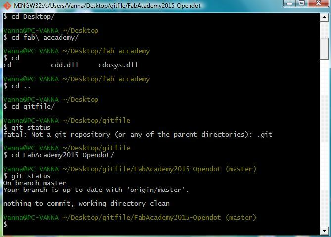
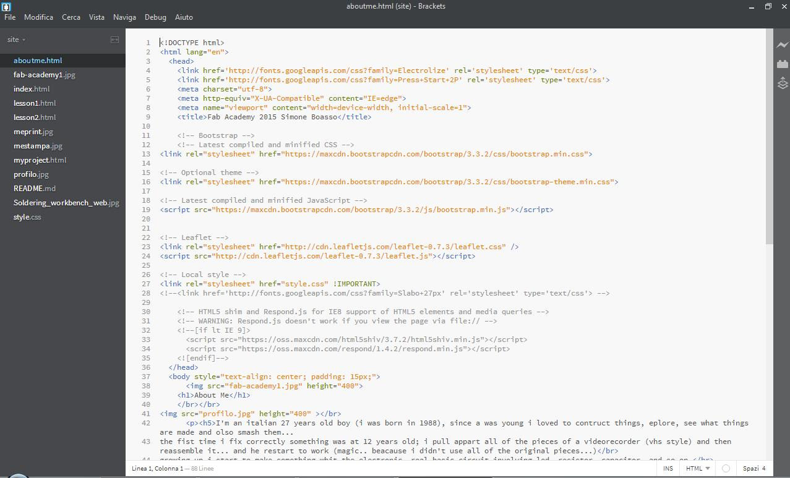

Project managment
For this week we have to improve ours project management skill;
the goals are:
-make a website for housing all the information about the FabAcademy course and for show ours progression in the final project
-use Git hub for version management and for learn how to work whit other people at the same time on a project
Git Hub
git hub is a on-line service for make a repository and document all the revision of the file we put an pull.
The access at the repository is made by text terminal,and some of the command are shown below
we have a local repository on the Opendot git hub account, and all the student of this location have to respect the others directory.

git bash text interface; don't pay attention at the name of the pc, i'm using my mom nootebook this week
The concept is that we have a shared repository where we work together to make the OpenDot site made of our pages and we have to maintain updated our site respecting the other user site.
HERE you can find the basic command of the terminal
is a good thing making this order in the command when you modify something and want to update the repository:
-make the current directory the one you want to have the clone of the repository whit "cd name of the folder"
-git clone ( only the first time)
-git pull
-git add ( all the file you want by name or "." to add all file new and modified)
-git commit -m "message of the commit"
-git push
HTML and CSS for web design
For create the site i search online for a basic template and i copy some of the structure,and the personalized some structure.
For this purpose i used a program called bracket, it is a free text editor tool optimized for web develop.
It support hTML5 and CSS structure and have shortcut for writing web syntax.
iIs also have a real time visualization of what the code looks like in web browser (it works on chrome).
I used some bootstrap content and some goggle font for make the site looks better.
I also experiment the implementation of a JavaScript for map visualization whit localization of my home.
Every time i have to add a new lesson i copy the page of the lesson before and modify that bey adding all the content and making link between pages in the index and in all pages.

Bracked interface screenshot
Final project
we have also to think about our final project of the FabAccademy course, and make a little description and a page about that.